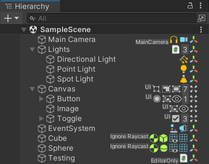
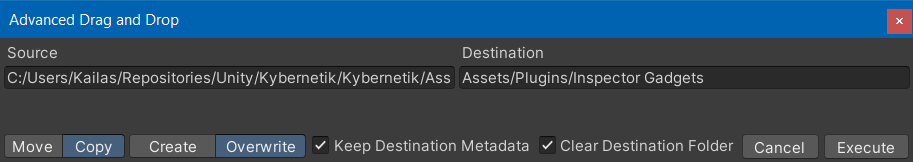

Inspector Gadgets v7.0
- Planned Release 2023-03-??
- Currently available for testing.
- Email your Invoice Number to mail@kybernetik.com.au if you would like to try it out.
- No more features are planned for this version beyond what's listed here, but I'll be working on some documentation improvements and a new trailer video before release.
Features
- Added
EnhancedHierarchysystem which shows object details to the Hierarchy:- It shows components, child count, tag, and layer.
- You can Alt + Click a component to enable/disable it. For the
Transformcomponent, it will activate/deactivate the wholeGameObject. - You can Drag and Drop components out of the Hierarchy. This is especially useful if you have multiple components of the same type and want to choose a specific one.

- Added
AdvancedDragAndDropsystem: hold Ctrl + Alt when you Drag and Drop external files into the Project window to show a window with options for how you want to handle those files.- Move or Copy.
- Overwrite existing files or ensure they have unique names to Create new ones.

Improvements
- Moved everything from Assets/Plugins/Inspector Gadgets to Packages/com.kybernetik.inspector-gadgets:
- Inside the Project window, the Inspector Gadgets folder will show up in the Packages section (below Assets).
- Reorganised everything to be divided between Editor and Runtime as separate assemblies.
- Improved the Transform Inspector:
- Changed the fields to display approximations for values that don't fit in the GUI. This uses the same system as Animancer Transitions.
- Replaced the "Shrink Scientific Values" setting with "Show Approximations".
- Changed the way dragging on the main labels works:
- Dragging
Positionmoves the object relative to the scene camera (or game camera in Play Mode). Scrolling moves it forward and back. - Dragging
Rotationrotates the object relative to the camera (as above). Scrolling rotates it around the camera forward. - Dragging
Scalescales the object relative to its scale when you started.
- Dragging
- Fixed various minor GUI layout issues.
- Removed the "Emphasize Non-Default Fields" setting because it wasn't very useful and didn't look good.
- Removed the ability to Right Click the
Snap button to open the Snap Settings because Unity no longer has a straightforward way to open it via script.
- Changed the fields to display approximations for values that don't fit in the GUI. This uses the same system as Animancer Transitions.
- Improved the "Get" button in Object Reference Fields:
- Added the ability to hold Ctrl to search assets.
- Added support for non-component types, which will always search assets.
- Added a cancelable progress bar to
IGEditorUtils.FindAssetOfTypesince it can take a very long time in large projects. - Added a setting to determine whether the button should always be shown. Otherwise, it only shows if there is no reference or you hold Alt.
- Improved Auto Hide UI:
- Added an option to have it only activate on children of a
Canvas. - Changed it to not activate if the
Canvasis disabled.
- Added an option to have it only activate on children of a
- Improved the Movement Guides:
- Values are now clamped to 2 decimal places.
- The whole label is now on one line because Unity draws the wrong size background box if it has multiple lines.
- It now uses a monospaced font if available.
- Added support for disabling several features with conditional compilation symbols (mostly in case of conflicts with other plugins):
- Disable
ObjectDrawerwithDISABLE_IG_OBJECT_DRAWER. - Disable
ComponentEditorwithDISABLE_IG_COMPONENT_EDITOR. - Disable
ScriptableObjectEditorwithDISABLE_IG_SCRIPTABLE_OBJECT_EDITOR.
- Disable
Fixes
- Fixed potential
NullReferenceExceptioninSelectionHistory. - Fixed snap settings to use the "new"
EditorSnapSettingsinstead of the oldEditorPrefs. - Fixed pasting values from the system clipboard to properly parse
-symbols. - Fixed the custom
Transformgizmos to be disabled whenever aProBuilderobject is selected to avoid conflicting with the custom gizmos of that system. - Fixed broken drag and drop into Inspector in Unity 2022.2.